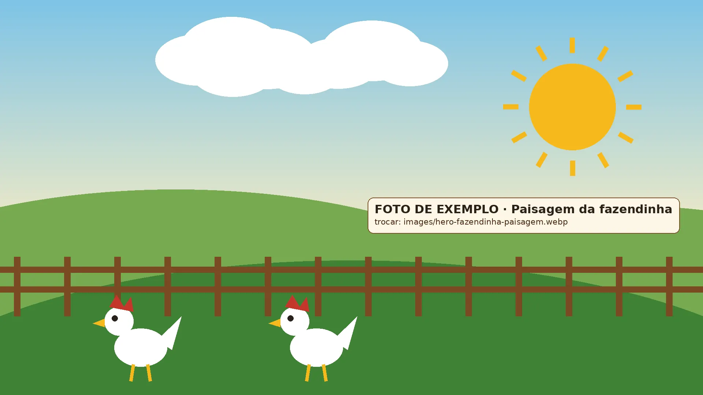
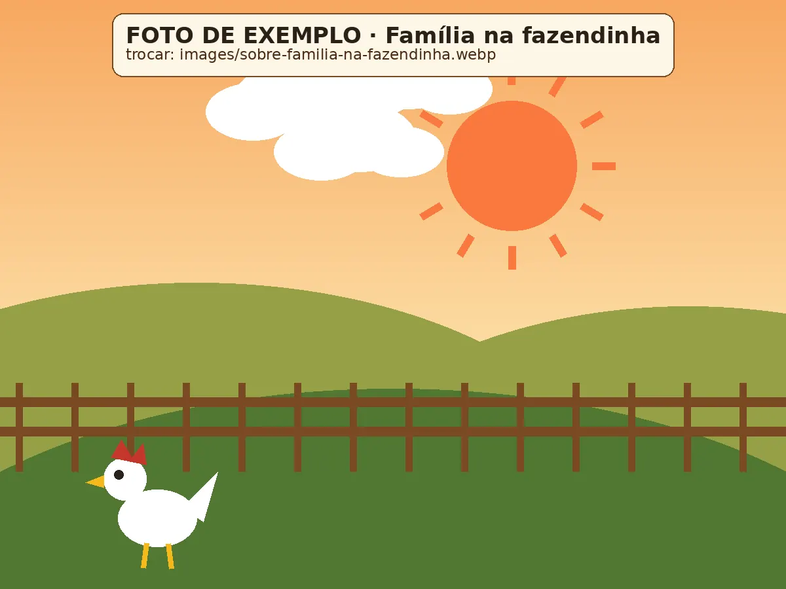
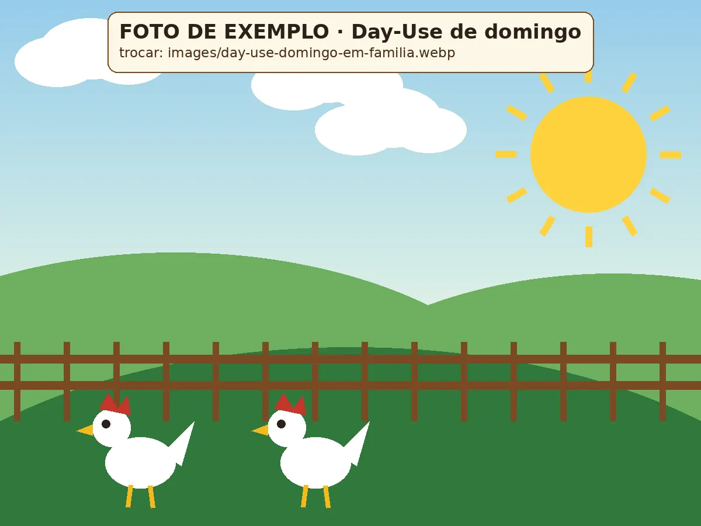
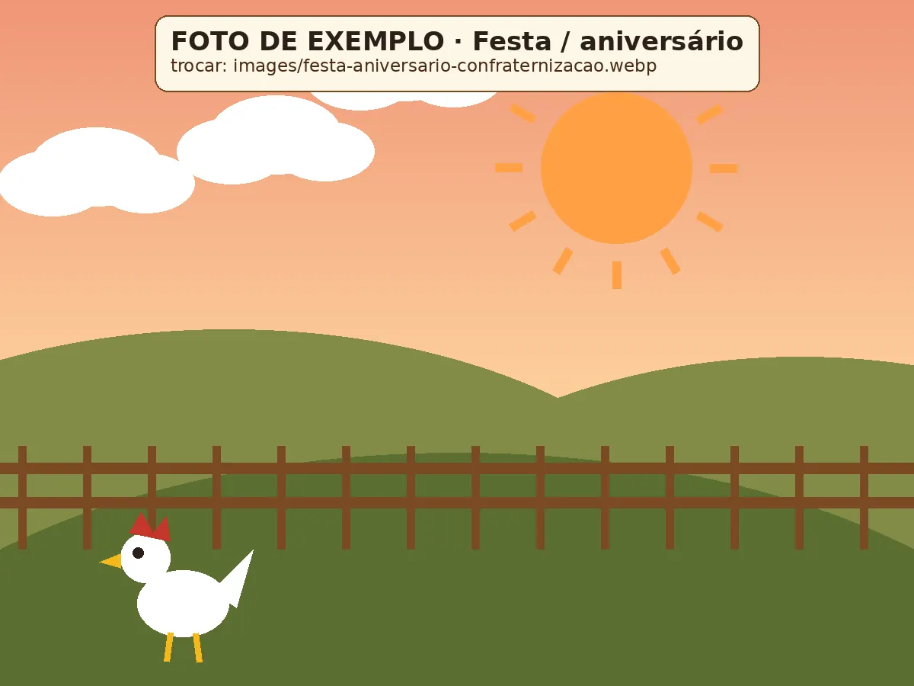
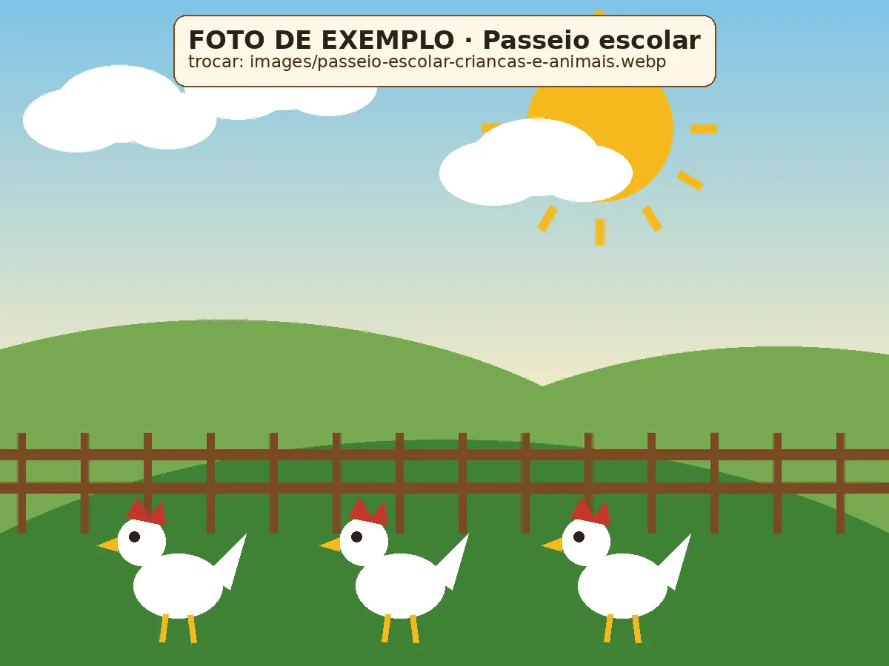

Passeios Escolares
Visitas pedagógicas com contato com os animais e a natureza.
Com agendamento
Ver detalhes
Buffet Rural em Cuiabá – MT
Day-Use aos domingos, festas aos sábados e passeios escolares durante a semana — tudo num cantinho rural cheio de natureza e bichinhos.
Sobre a fazendinha
A Fazendinha Co-Có-Ri-Có é um buffet rural em Cuiabá feito para quem gosta de natureza, bichinhos e tempo de qualidade em família. Aqui as crianças trocam a tela pelo gramado, conhecem de perto os animais da fazenda e voltam pra casa com o pé sujo de terra e um sorriso no rosto.
Nascemos da vontade de levar a experiência do interior para dentro da rotina de Cuiabá: um lugar simples, acolhedor e seguro, onde a família inteira se sente em casa. [PREENCHER] Quando e como a fazendinha começou, quem são os donos.
Seja no Day-Use de domingo, numa festa de sábado ou num passeio da escola, o nosso jeito é o mesmo: receber cada visitante com carinho de fazenda.

Agenda da semana
Organize sua visita: durante a semana recebemos as escolas, sábado é dia de festa e domingo é dia de Day-Use.
Visitas pedagógicas com contato com os animais e a natureza.
Com agendamento
Ver detalhesFestas infantis, eventos de empresa e encontros de família.
Com reserva
Ver detalhesUm dia inteiro de lazer em família no ambiente rural.
Das 10h às 16h
Ver detalhes
DomingoDomingo é dia de desacelerar! Traga a família para passar o dia no campo: ar livre, contato com os animais e espaço para as crianças brincarem à vontade enquanto os adultos relaxam.

SábadoFestas infantis, aniversários, eventos de empresa e encontros de família com cenário rural de verdade. A criançada se diverte no campo e os convidados aproveitam um dia diferente, longe do salão de sempre.

Seg a SexVisitas pedagógicas para escolas, com contato com os animais e a natureza. Uma aula a céu aberto para os alunos aprenderem de onde vêm os alimentos, como vivem os bichos da fazenda e por que cuidar do meio ambiente.
Galeria
Toque numa foto para ampliar. Fotos de exemplo
Depoimentos
Exemplos — substituir por depoimentos reais
★★★★★
[PREENCHER] Depoimento real de uma família que foi ao Day-Use.
★★★★★
[PREENCHER] Depoimento real de quem fez aniversário ou confraternização.
★★★★★
[PREENCHER] Depoimento real de uma escola/coordenação pedagógica.
Dúvidas frequentes
Não achou sua resposta? Chama a gente no WhatsApp!
[PREENCHER] Resposta a ser enviada pelo cliente.
[PREENCHER] Resposta a ser enviada pelo cliente.
[PREENCHER] Resposta a ser enviada pelo cliente.
[PREENCHER] Resposta a ser enviada pelo cliente.
[PREENCHER] Resposta a ser enviada pelo cliente.
Já são 34 mil seguidores acompanhando os bichinhos, as festas e os domingos na fazendinha. Vem com a gente!
Seguir no InstagramContato
Reservas, orçamentos e agendamentos são feitos pelo WhatsApp. É rapidinho!
Estamos em Cuiabá – MT.
Peça a localização pelo WhatsApp e a gente te manda o pin certinho.